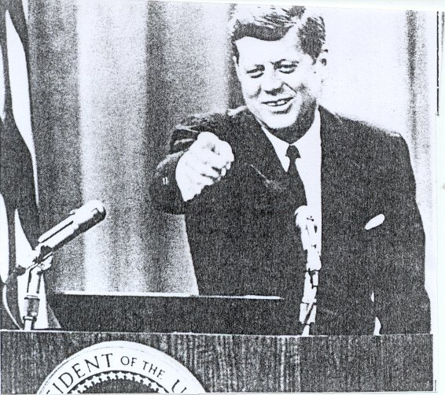

JOHN F. KENNEDY (1917 - 1963)
35TH PRESIDENT OF THE UNITED STATES

President Kennedy sharing a joke with the press
KENNEDY, JOHN FITZGERALD.
John F. Kennedy, whose ancestors came from Ireland, was the first Roman Catholic to become president of the United States. At 43 he was also the youngest man ever elected to the highest office of his country. Communist control of Cuba and the discovery of Soviet nuclear missiles in that country almost brought the united sates to the brink of war during President Kennedy’s second year at office. His support of Negro’s demands for equality in civil rights shook the Democratic Party’s long standing-grip on the south and tested his political leadership.
Racial integration, economics, and other issues stirred fierce antagonisms throughout the United States. Yet for millions of his countrymen John F. Kennedy held great charm and even greater hopes, and his assassination in 1963 brought many men to tears.